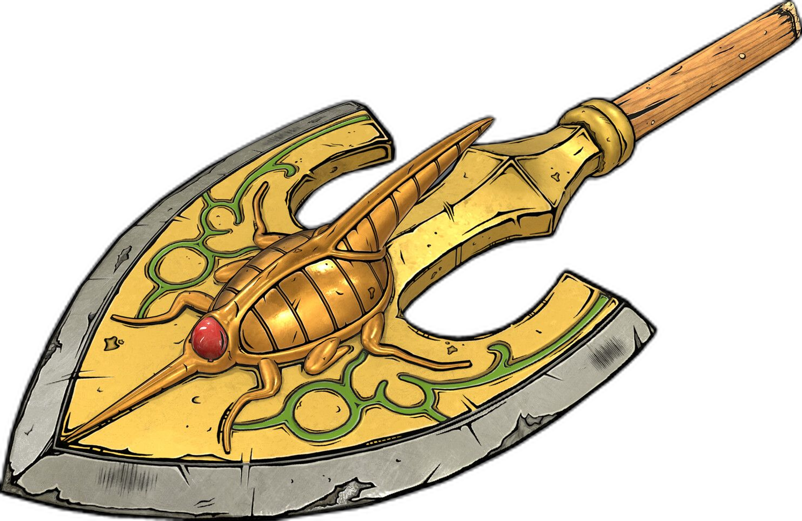

A Animação de JoJo no Kimyou na Bouken

A adaptação em anime de JoJo no Kimyou na Bouken desempenhou um papel fundamental na popularização mundial da obra de Hirohiko Araki. Embora a franquia já fosse extremamente conhecida entre os leitores de mangá no Japão, foi através da animação que a série alcançou um público muito mais amplo, tornando-se um dos títulos mais reconhecidos da indústria dos animes.
Antes da adaptação moderna, a obra recebeu algumas animações em formato OVA durante as décadas de 1990 e 2000, adaptando parte dos acontecimentos de Stardust Crusaders. No entanto, foi somente em 2012 que o estúdio David Production iniciou uma adaptação completa da série, começando por Phantom Blood e Battle Tendency. A recepção positiva do público e da crítica permitiu a continuidade do projeto, resultando em adaptações sucessivas das partes seguintes.
Ao longo dos anos, o anime adaptou Stardust Crusaders, Diamond is Unbreakable, Golden Wind e Stone Ocean, cobrindo integralmente as seis primeiras partes do mangá. Cada temporada buscou preservar a identidade visual criada por Araki, reproduzindo suas poses icônicas, escolhas artísticas ousadas e referências culturais que se tornaram marcas registradas da franquia. Além disso, a trilha sonora, a direção criativa e a qualidade das animações contribuíram para consolidar a reputação da série entre fãs antigos e novos espectadores.
Um dos maiores destaques da adaptação é a forma como cada parte possui uma identidade própria. Mudanças de ambientação, estilo visual, protagonistas e tom narrativo fazem com que cada temporada apresente uma experiência diferente, mantendo a essência da obra enquanto evita a repetição. Essa característica ajudou o anime a permanecer relevante por mais de uma década de exibição.
Atualmente, a adaptação animada encontra-se em um momento de transição. Com a conclusão de Stone Ocean, exibida entre 2021 e 2022, toda a continuidade original de JoJo's Bizarre Adventure foi adaptada para anime. Os fãs agora aguardam notícias sobre uma possível adaptação de Steel Ball Run, considerada por muitos uma das melhores partes do mangá. Apesar da grande expectativa do público, até o momento não há uma data oficial de lançamento para a animação completa da sétima parte.
Mesmo após mais de trinta anos desde a publicação do primeiro capítulo do mangá e mais de uma década desde o início da adaptação moderna, o anime de JoJo no Kimyou na Bouken continua sendo uma das produções mais influentes e celebradas da cultura pop japonesa. Seu impacto pode ser visto na comunidade de animes, em referências presentes em outras obras e na constante chegada de novos fãs, garantindo que o legado da família Joestar permaneça vivo para as próximas gerações.
Trailer Oficial de JoJo's Bizarre Adventure